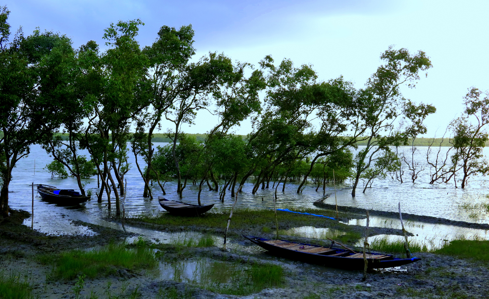
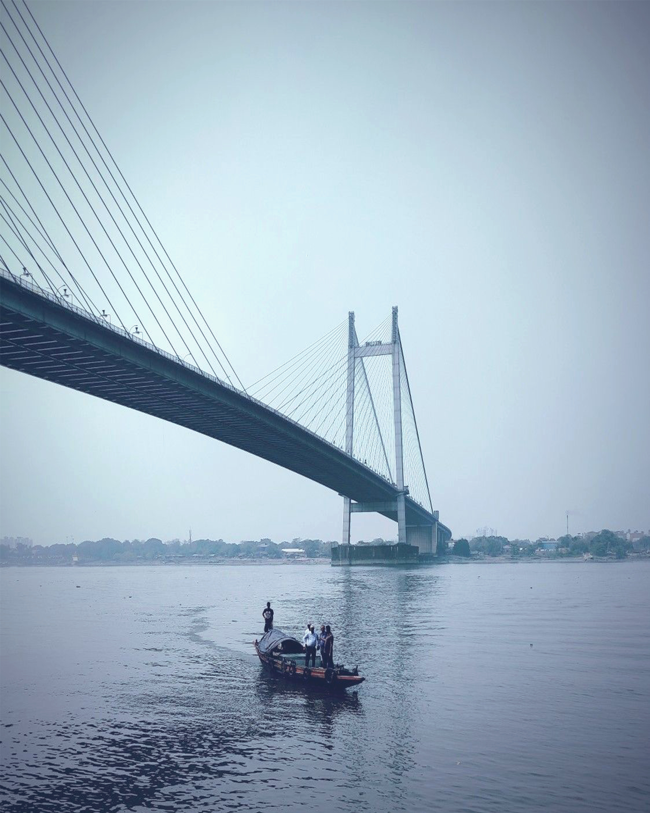

TOP RECCOMENDATIONS



A perfect blend of culture and modernity
As sweet as the sweetest sweets
VICTORIA'S MEMORIAL
The Victoria Memorial, a huge monument made of white marble located in the heart of the City of Joy, Kolkata (erstwhile Calcutta) in West Bengal, India is one of the most famous monuments in West Bengal that has become a museum and popular tourist spot of the state. A brainchild of George Curzon, 1st Marquess Curzon of Kedleston and Viceroy of India, this monument epitomising beauty and elegance was dedicated to the memory of Queen Victoria (1819–1901). This grand and exquisite memorial not only stands as reminiscence to the rule of British Crown in the Indian subcontinent but also stands out as an excellent architectural gem in Indo-Saracenic revivalist style. It is a must visit tourist destination for first time visitors to experience the essence of Victorian era in the midst of the bustling metro city of Kolkata.
SUNDERBAN NATIONAL PARK
In Sundarban National Park in West Bengal, the tiger makes his round with an unmatched stealth and grace. The air feels wet and damp, while the silence is interrupted by the melodious singing of birds and roar of motor boats. Inside these world’s largest mangrove forests, creeks and tributaries form an intricate system of networks. Sometimes, they meet each other, and at others, wander off elsewhere. Tourists out on a boat ride are given their money’s worth while crossing them. Even though you are unaware, the big cat and saltwater crocodile observe you at all times, watching every step you make. However, sometimes, look up, as there is action on the trees too. A variety of birds, from brahminy kite to whistling teals, call this their home, and declare that from time to time with a loud cry, song or chirp. The Sunderban National Park is many things at once, a biosphere reserve, national park and tiger reserve, such is the richness of this mangrove ecosystem. What we commonly call Sunderbans is actually a large delta spread across 40,000 sq. km between India and Bangladesh! Just to give you an idea of how vast it really is, consider this. It stretches from River Hooghly in West Bengal, India, all the way to River Baleswar in Bangladesh. In this UNESCO World Heritage Site (it was declared a UNESCO World Heritage Site in 1987), the mangrove trees stand lazily on the mudflats, which are visible during low tides, and submerged in height tide. Its name means “beautiful forests” in the local language, and it is not hard to figure why.
HOWRAH BRIDGE
Howrah Bridge is an architectural marvel and a well-known Kolkata landmark. It has served as a backdrop for numerous movies since the 1950s, including a 1958 film named after the bridge. Walk across the bridge and admire its unique construction or glide underneath while on a boat ride along the Hooghly River. With a central span of 1,500 feet (457 meters) between its two towers, this enormous steel structure is one of the longest cantilever bridges of its type in the world. Howrah Bridge extends across the Hooghly River, connecting the city of Howrah to Kolkata. It was built in 1942 without a single nut or bolt and is held together by rivets. Pause to take in some of the bridge’s features. The supporting towers at either end rise up more than 280 feet (85 meters). Observe the massive cantilever arms and network of girders. Alternatively, rent a boat from the Howrah Station jetty and enjoy a view of the bridge from the water. Plenty of other vantage points can be found along the banks of the river. Although still known locally as Howrah Bridge, the crossing was renamed Rabindra Setu in 1965 after Rabindranath Tagore, India’s first Nobel Laureate